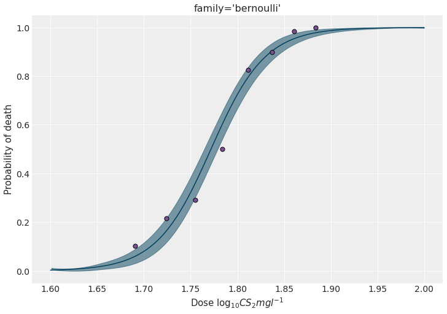
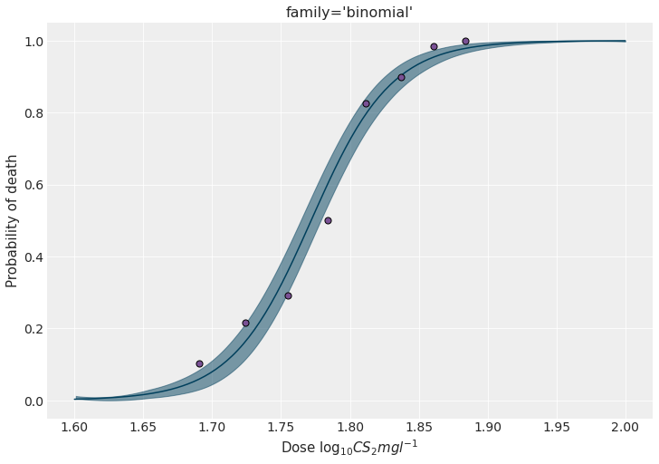

import arviz as az
import bambi as bmb
import matplotlib.pyplot as plt
import numpy as np
import pandas as pdBinomial family in Bambi
Introduction
Although GSoC 2021 is close to come to an end, there’s still a lot of exciting things going on around Bambi. Today I’m going to talk about another new family that’s about to be merged into the main branch, the Binomial family.
Let’s get started by trying to see why we need to have another new family for modeling binary data in Bambi.
Aggregated vs disaggregated data
Bambi already has the Bernoulli family to model binary data. This family fits very well when you have a data set where each row represents a single observation and there’s a column that represents the binary outcome ( i.e the result of the Bernoulli trial) as well as other columns with the predictor variables.
Let’s say we want to study the lethality of a certain drug and we have a group of mice to experiment with. An approach could be to divide the mice into smaller groups, assign a certain dose to all the mice in each group, and then finally count the number of units that died after a fixed amount of time. Under the Bernoulli family paradigm, each row has to represent a single observation, looking like this:
| Obs | Dose | Died |
|---|---|---|
| 1 | 1.3 | 0 |
| 2 | 1.8 | 1 |
| 3 | 2.2 | 1 |
where each row represents a single mouse (i.e. a single Bernoulli trial). The 0 is used to represent a failure/survival, and 1 is used to represent a successes/death.
What if our data is aggregated? The nature of the experiment makes it natural to have rows representing groups, a column representing the number of deaths, and another column representing the number of mice in the group.
| Group | Dose | Dead | Total |
|---|---|---|---|
| 1 | 1.3 | 12 | 20 |
| 2 | 1.8 | 18 | 25 |
| 3 | 2.2 | 24 | 34 |
where each row represents a group of mice. Dose is the dose applied to all the units in the group, Dead is the number of mice that died, and Total is the number of mice in the group. If we focus on the Dead and Total columns we can easily see they resemble data coming from a Binomial distribution (i.e. number of successes out of a series of \(n\) independent Bernoulli trials). In other words, for a given row, we can think there’s a Binomial distribution where Dead represents the number of successes out of Total number of trials (each mouse is a trial).
Before continuing, it’s important to note that if the data is originally aggregated as in the lower table, it can always be disaggregated to resemble the one in the upper table. So what’s the problem?
The answer is that there’s actually nothing wrong with having the data in such a granular form! But, if the data already comes aggregated, why doing extra work when we now have the Binomial family? Let’s have a look at the examples below!
az.style.use("arviz-darkgrid")
BLUE = "#003f5c"
PURPLE = "#7a5195"
PINK = "#ef5675"We’re going to use real data in this example1. This data consists of the numbers of beetles dead after five hours of exposure to gaseous carbon disulphide at various concentrations:
| Dose, \(x_i\) (\(\log_{10}\text{CS}_2\text{mgl}^{-1}\)) |
Number of beetles, \(n_i\) | Number killed, \(y_i\) |
|---|---|---|
| 1.6907 | 59 | 6 |
| 1.7242 | 60 | 13 |
| 1.7552 | 62 | 18 |
| 1.7842 | 56 | 28 |
| 1.8113 | 63 | 52 |
| 1.8369 | 59 | 53 |
| 1.8610 | 62 | 61 |
| 1.8839 | 60 | 60 |
x = np.array([1.6907, 1.7242, 1.7552, 1.7842, 1.8113, 1.8369, 1.8610, 1.8839])
n = np.array([59, 60, 62, 56, 63, 59, 62, 60])
y = np.array([6, 13, 18, 28, 52, 53, 61, 60])
data = pd.DataFrame({
"x": x,
"y": y,
"n": n
})Quite simple, right? Can we use it as it is with the Bernoulli family? Let’s have a look below.
Bernoulli family
Nope, no surprises today. To use the Bernoulli family, we first need to transform the data into the dissagregated or long format. One approach is the following
data_bernoulli = pd.DataFrame({
"x": np.concatenate([np.repeat(x, n) for x, n in zip(x, n)]),
"killed": np.concatenate([np.repeat([1, 0], [y, n - y]) for y, n in zip(y, n)])
})Do you realize how bothering it can be to do that if we have many more variables? Nevermind, let’s keep going.
Now let’s initialize a Bambi model and sample from the posterior:
model_brn = bmb.Model("killed ~ x", data_bernoulli, family="bernoulli")
idata_brn = model_brn.fit()Modeling the probability that killed==1
Auto-assigning NUTS sampler...
Initializing NUTS using jitter+adapt_diag...
Multiprocess sampling (2 chains in 2 jobs)
NUTS: [x, Intercept]
100.00% [4000/4000 00:03<00:00 Sampling 2 chains, 0 divergences]
Sampling 2 chains for 1_000 tune and 1_000 draw iterations (2_000 + 2_000 draws total) took 4 seconds.and explore the marginal posteriors
az.summary(idata_brn, kind="stats")| mean | sd | hdi_3% | hdi_97% | |
|---|---|---|---|---|
| Intercept | -61.021 | 5.250 | -70.606 | -51.311 |
| x | 34.443 | 2.954 | 28.933 | 39.745 |
We can predict the the probability of dying for out-of-sample data to see how it evolves with the different concentration levels.
new_data = pd.DataFrame({"x": np.linspace(1.6, 2, num=200)})
model_brn.predict(idata_brn, data=new_data)fig, ax = plt.subplots(figsize=(10, 7))
# Plot HDI for the mean of the probability of dying
az.plot_hdi(
new_data["x"],
idata_brn.posterior["killed_mean"].values,
color=BLUE,
ax=ax
)
ax.plot(
new_data["x"],
idata_brn.posterior["killed_mean"].values.mean((0, 1)),
color=BLUE
)
ax.scatter(x, y / n, s=50, color=PURPLE, edgecolors="black", zorder=10)
ax.set_ylabel("Probability of death")
ax.set_xlabel(r"Dose $\log_{10}CS_2mgl^{-1}$")
ax.set_title("family='bernoulli'")
plt.show()
Binomial family
Before writing down the model with the Binomial family, let’s take a moment to review new notation that was added specifically for this purpose.
The model formula syntax only allows us to pass one variable on its LHS. Then, how do we tell Bambi that what we want to model is the proportion that results from dividing y over n?
Thanks to recent developments, it’s as easy as writing proportion(y, n), or any of its aliases prop(y, n) and p(y, n). To keep it shorter, let’s use the last one.
model_bnml = bmb.Model("p(y, n) ~ x", data, family="binomial")
idata_bnml = model_bnml.fit()Auto-assigning NUTS sampler...
Initializing NUTS using jitter+adapt_diag...
Multiprocess sampling (2 chains in 2 jobs)
NUTS: [x, Intercept]
100.00% [4000/4000 00:03<00:00 Sampling 2 chains, 0 divergences]
Sampling 2 chains for 1_000 tune and 1_000 draw iterations (2_000 + 2_000 draws total) took 3 seconds.Quite simple, right? The code here is very similar to the one for the model with the Bernoulli family. However, the new Binomial family allows us to use the data in its original form.
Let’s finish this section by getting the marginal posteriors as well as a figure as the one displayed above.
az.summary(idata_bnml, kind="stats")| mean | sd | hdi_3% | hdi_97% | |
|---|---|---|---|---|
| Intercept | -61.045 | 4.969 | -69.905 | -51.495 |
| x | 34.452 | 2.793 | 29.185 | 39.552 |
model_bnml.predict(idata_bnml, data=new_data)fig, ax = plt.subplots(figsize=(10, 7))
az.plot_hdi(
new_data["x"],
idata_bnml.posterior["p(y, n)_mean"].values,
color=BLUE,
ax=ax
)
ax.plot(
new_data["x"],
idata_bnml.posterior["p(y, n)_mean"].values.mean((0, 1)),
color=BLUE
)
ax.scatter(x, y / n, s=50, color=PURPLE, edgecolors="black", zorder=10)
ax.set_ylabel("Probability of death")
ax.set_xlabel(r"Dose $\log_{10}CS_2mgl^{-1}$")
ax.set_title("family='binomial'")
fig.set_facecolor("w")
fig.savefig("imgs/plot.png")
plt.show()
Conclusions
This blog post introduced the new Binomial family. This new family saves us from having to manipulate aggregated data prior to modeling, making it more pleasant and simpler to specify and fit models for binary data in Bambi.
Footnotes
This data can be found in An Introduction to Generalized Linear Models by A. J. Dobson and A. G. Barnett, but the original source is (Bliss, 1935).↩︎